The Visitor Pattern enables to add new behavior to existing classes in a fixed class hierarchy without changing this hierarchy.
Intent of the Visitor in Context
Recall the problems of inheritance with modeling variations at the level of multiple objects (object composites).
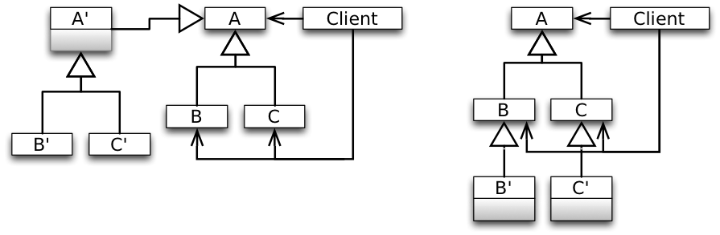
Problems:
Weak support for combining variations at the level of the composite with those at the level of individual elements.
No support for expressing covariant variations.
Instantiation problems.
Solution
Solution Idea
Represent the additional operations to be performed on the elements of an object structure (additional features) as objects (of type Visitor).
Structure
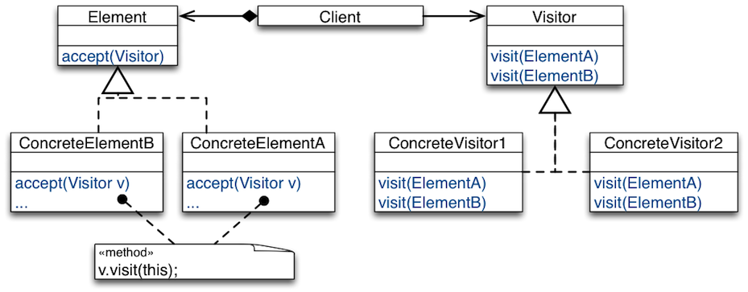
Example Usage:
Element e = new ConcreteElementA(...);
Visitor v = new ConcreteVisitor1(...);
e.accept(v);
The Visitor interface declares a visit method per element type in the object structure.
A Visitor interface describes how to “treat” the element types.
Concrete visitor classes implement the interface specifically, i.e., treat elements differently.
A concrete visitor class corresponds to a particular feature to be added to the object structure.
Elements in the object structure provide the method accept(Visitor).
On being asked to accept a visitor passed to it as a parameter, an element asks the visitor to visit it.
Structure (Long Version)
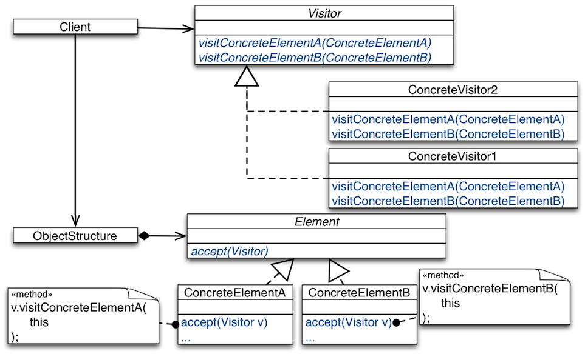
Case-Study: Arithmetic Expressions
Case-Study: Arithmetic Expressions
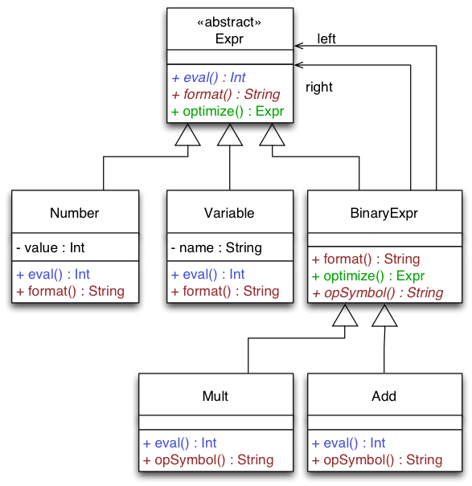
Requirements:
A library for (arithmetic) expressions must provide different functionality for:
Formatting an expression to a string.
Computing the value of an expression.
Optimizing an expression.
The library must be extensible with new functionality:
Generate code for different machines,
Various refactorings, e.g., rename variables,
The library must be extensible with new kinds of expressions.
Design Issues:
Impossible to reuse part of library functionality (product lines).
Changing one feature can destabilize other features (SRP).
New features cannot be incrementally added (OCP).
Visitor-Based Design
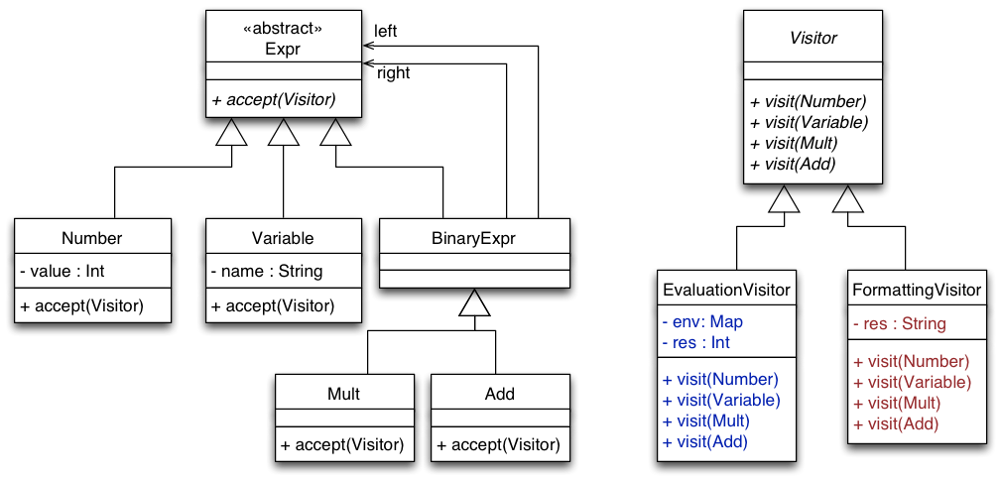
The dispatch of the operations defined in the Element hierarchy depends on two parameters:
Dynamic type of the receiver Element determines the class that has the needed method look-up table.
Name of the operation being called determines the entry in that table.
For operations that are outsourced to visitors, we need to simulate the same dispatch semantics.
We need to select an implementation of an operation based on both
the dynamic type of the element on which to apply the operation,
the dynamic type of the visitor object representing the operation.
Reflections on the Visitor Structure
Reflections on the Visitor Structure
Can we move the implementation of accept higher up the Element hierarchy?
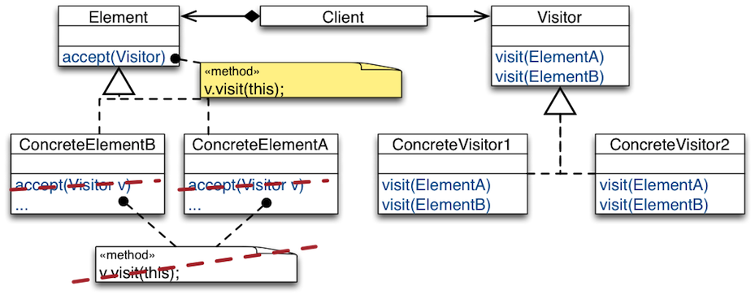
Answer: No. The method that is called by v.visit(this) is determined at compile-time.
Case-Study: Calculating Shape Intersection
Case-Study: Calculating Shape Intersection
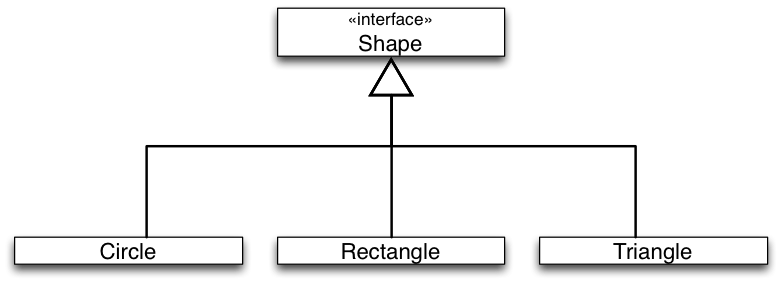
Task:
Implement an intersect operation that calculates whether two given shapes intersect.
TODO Enable: "anim-step:1"
Case-Study: Calculating Shape Intersection
Task:
Implement an intersect operation that calculates whether two given shapes intersect.
Sketch of the solution:
Shape t = new Triangle(…);
Shape r = new Rectangle(…);
if (t.intersect(r)) {…}
For the proposed solution, the implementation of intersect depends on the dynamic type of both the receiver (t) and parameter (r) shapes. Hence, we need to simulate double dispatch in Java.
Case-Study: Calculating Shape Intersection
Simulating Double Dispatch
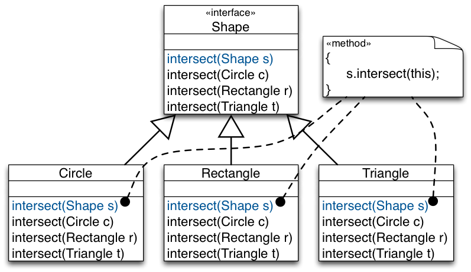
Case-Study: Calculating Shape Intersection
Simulating Double Dispatch
Shape t = new Triangle(…);
Shape r = new Rectangle(…);
if (t.intersect(r)) {…}
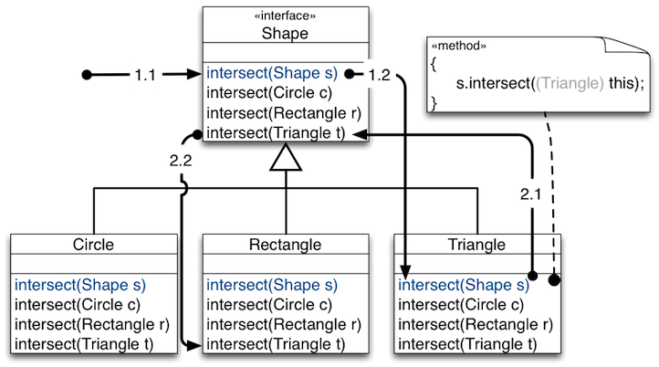
External call t.intersect(r) is dispatched based on dynamic type of t.
Internal call s.intersect(this) is dispatched based on dynamic type of r.
Assessment:
The given design forces every shape class to implement its intersection with every other shape. Adding new shapes means implementing new methods in every other shape.
The double dispatch approach compromises the semantic-hierarchy concept.
This results in an inheritance tree where each derivative is aware of all other derivates.
Case-Study: Shape Intersection Using Visitor
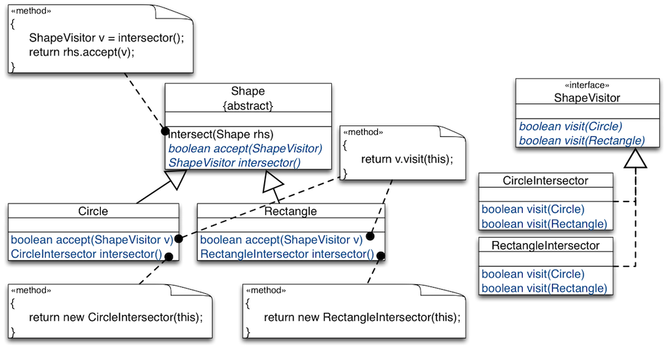
The Visitor Pattern can be used to eliminate the cross-reference in each shape derivative to each other shape derivative. The key idea is to move the intersect functionality to visitors and to implement one intersection visitor (e.g., CircleIntersection or RectangleIntersector) per Shape type.
Case-Study: Shape Intersection Using Visitor
Shape c = new Circle(…);
Shape r = new Rectangle(…);
if (c.intersect(r)) {…}
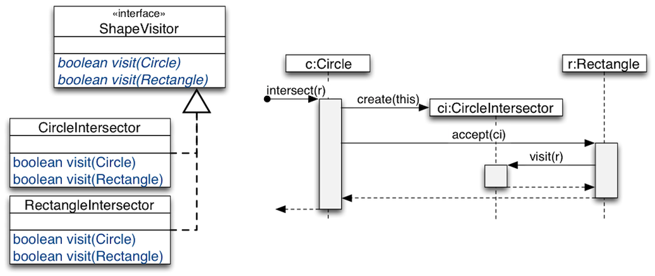
Assessment of the Visitor Design Pattern
Advantages of the Visitor Design Pattern
New operations are easy to add without changing element classes (add a new concrete visitor).
Different concrete elements do not have to implement their part of a particular algorithm.
Related behavior focused in a single concrete visitor.
Visiting across hierarchies: Visited classes are not forced to share a common base class.
Accumulating state: Visitors can accumulate state as they visit each element, thus, encapsulating the algorithm and all its data.
Issues of the Visitor-Based Design
Adding Elements
Scenario:
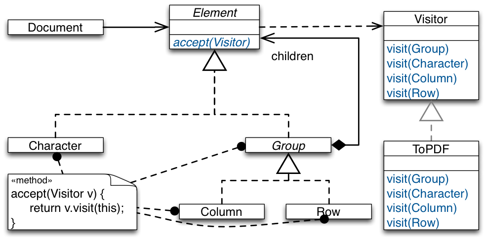
Description:
Visitor visits all elements of a document.
ToPDF converts documents to PDF.
Various other concrete visitors may be implemented:
spell checking, grammar checking, text analysis, speaking text service, ...
Issues of the Visitor-Based Design
E.g., adding Chart (adding Elements)
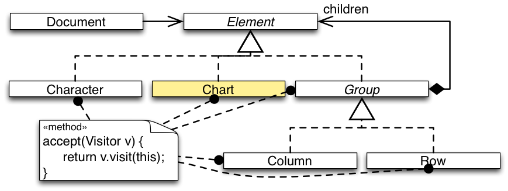
Problem: Since Visitor has no method for Chart, it’s objects won’t be processed by any visitor. Our design is not closed against this kind of change.
Issues of the Visitor-Based Design
E.g., adding Chartand updating Visitor
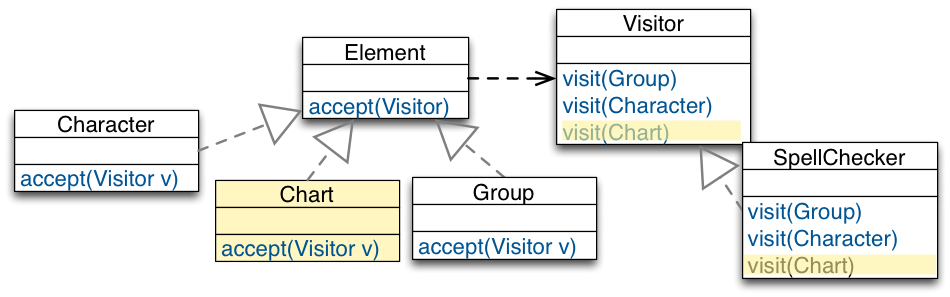
Issues:
We have to change all visitors for every new element.
Many visitors will have empty methods to comply to the interface.
Sometimes data structures are extended, but it‘s optional to process extensions.
E.g., it doesn’t make sense to spell-check charts, i.e., SpellChecker.visit(Chart) will be empty.
Issues of the Visitor-Based Design
E.g., adding Chartand keeping Visitor unchanged
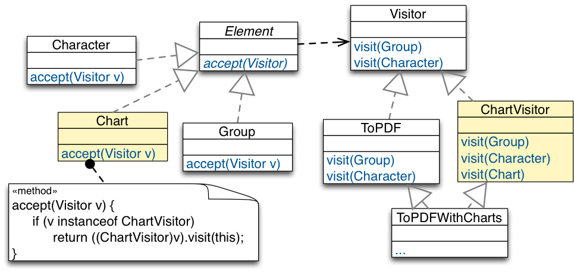
Issues of the Visitor-Based Design
E.g., adding Chartand keeping Visitor unchanged
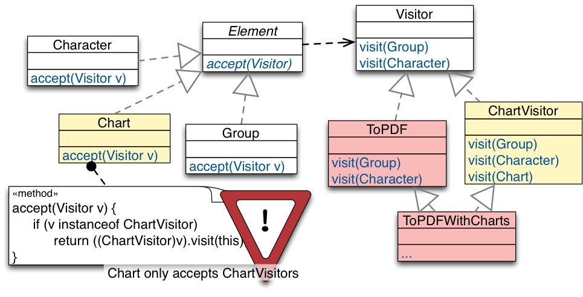
Try to avoid such visitors as these implementations are extremely fragile; they are maintenance nightmares when more elements are added.
Issues of the Visitor-Based Design
Partial Visiting Is Not Supported
Visitor is like a matrix (cross product of all Visitor and Element classes):
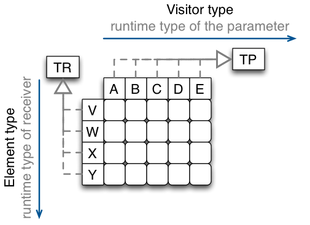
Partial visiting is not supported!
To provide a common abstract Visitor interface to Element, every derivative of Element need to be addressed by every derivative of Visitor; even if this might not make sense or is not needed. We have seen this for SpellChecker.visit(Chart)
Takeaway
Takeaway
Visitor brings functional-style decomposition to OO designs.
Use Visitor for stable element hierarchies.
Visitor works well in data hierarchies where new elements are never or at least not very often added.
Do not use it, if new elements are a likely change.
Visitor only makes sense if we have to add new operations often! In this case Visitor closes our design against these changes.
Solving the Expression Problem in Scala
Recommended reading: Matthias Zenger and Martin Odersky, Independently Extensible Solutions to the Expression Problem, FOOL 2005
The code shown in the following can be downloaded here.
Using "Standard" Object-Oriented Features
Solving the Expression Problem in Scala
The base trait.
trait Expressions {
type expression <: Expression
trait Expression {
def eval: Double
}
trait Constant extends Expression {
val v: Double
def eval = v
}
}
To make it possible to extend the Expression trait (i.e., to enable an independently developed extension to contribute functionality to Expressions ) we have to abstract over the concrete type of Expression.
object ExpressionsFramework
extends PrefixNotationForExpressions
with PostfixNotationForExpressions {
type expression = Expression
trait Expression
extends super[PrefixNotationForExpressions].Expression
with super[PostfixNotationForExpressions].Expression
case class Constant(v: Double)
extends super[PrefixNotationForExpressions].Constant
with super[PostfixNotationForExpressions].Constant
with Expression
case class Add(val l: expression, val r: expression)
extends super[PrefixNotationForExpressions].Add
with super[PostfixNotationForExpressions].Add
with Expression
}
Assessment:
The solution is open w.r.t. to directly adding new functionality to expressions and w.r.t. adding new data-types that inherit from Expression.
It is easy to add support for new data-types (e.g., Add).
It is possible to add new functionality (in a type-safe way), but this requires a deep-mixin composition.
The solution is subject to the fragile base-class problem.
Using the Visitor-Design Pattern
Solving the Expression Problem in Scala
The base trait.
trait Expressions {
trait Expression { def accept[T](visitor: visitor[T]): T }
class Constant(val v: Double) extends Expression {
def accept[T](visitor: visitor[T]): T = visitor.visitConstant(v)
}
type visitor[T] <: Visitor[T]
trait Visitor[T] {
def visitConstant(v: Double): T
}
trait EvalVisitor extends Visitor[Double] {
def visitConstant(v: Double): Double = v
}
}
This solution does not support adding methods/functionality to an expression at runtime or by a third-party extension, i.e., an independently developed extension of the Expressions trait cannot contribute to the Expression trait.
Solving the Expression Problem in Scala
Adding a new data-type.
trait AddExpressions extends Expressions {
class Add(
val l: Expression,
val r: Expression) extends Expression {
def accept[T](visitor: visitor[T]): T = visitor.visitAdd(l, r)
}
type visitor[T] <: Visitor[T]
trait Visitor[T] extends super.Visitor[T] {
def visitAdd(l: Expression, r: Expression): T
}
trait EvalVisitor extends super.EvalVisitor with Visitor[Double] {
this: visitor[Double] ⇒
def visitAdd(l: Expression, r: Expression): Double =
l.accept(this) + r.accept(this)
}
}
Solving the Expression Problem in Scala
Bringing everything together:
trait ExtendedExpressions extends AddExpressions with MultExpressions {
type visitor[T] = Visitor[T]
trait Visitor[T]
extends super[AddExpressions].Visitor[T]
with super[MultExpressions].Visitor[T]
object EvalVisitor
extends super[AddExpressions].EvalVisitor
with super[MultExpressions].EvalVisitor
with Visitor[Double] {
this: visitor[Double] ⇒ }
}
By making the type visitor concrete (type visitor[T] = Visitor[T]) the data-type hierarchy is now fixed; extension is only possible w.r.t. new functionality.
The solution is open w.r.t. to adding new functionality to expressions by means of a visitor and w.r.t. adding new data-types that inherit from Expression.
It is easy to add new functionality (e.g., PrefixNotationForExpressions).
It is possible to add new data-types (in a type-safe way), but this requires a deep-mixin composition.
The solution is subject to the fragile base-class problem.